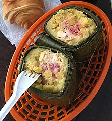

En Colombia el tamal es generalmente una masa de maíz seco pilado o de harina de maíz rellena de carnes y verduras, por lo general envuelta en hojas de plátano o de bijao, amarrada con pita y cocinada al vapor. Los hay de distintas formas, pueden ser ligeramente esféricos (amarrado únicamente por el extremo superior, lo que le da apariencia de bolsa), rectangulares y aplanados, cilíndricos u ovalados. En la Costa, al igual que los pasteles se envuelven en hojas de bijao, que les agregan su sabor característico. En la región de Tolima su base es de arroz, y además de las carnes, lleva huevo cocido y arveja amarilla, la hoja de envoltorio es de plátano. En el Cauca al tamal de pipián se le agrega a la base de la masa maní molido.

El tamal es un plato tradicional que es parte integral de la cultura de todas las regiones de Colombia, donde se han referenciado unas 500 variaciones del plato. En 2006, el tamal fue nominado a símbolo cultural de Colombia en el concurso organizado por la revista Semana con el apoyo de Caracol TV, el Ministerio de Cultura y Colombia es pasión.
A continuación vamos a ver sus ingredientes y su preparación